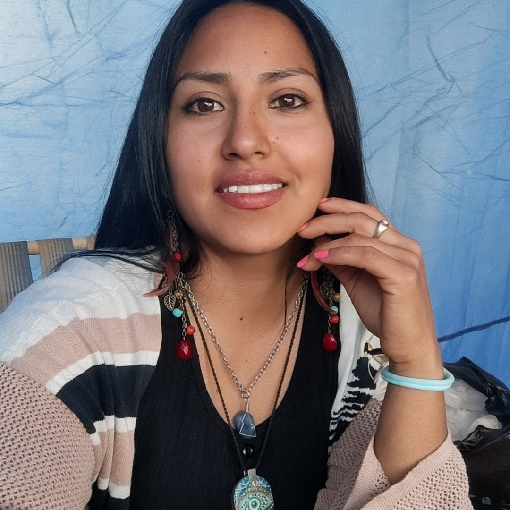

Técnica Electrónica / Programadora

Soy Técnica Electrónica y estudiante avanzada de la Tecnicatura Universitaria en Programación, con formación en electrónica, desarrollo de software y tecnologías informáticas. Cuento con experiencia práctica en soporte técnico, páginas web, software y configuración de equipos. Me caracterizo por mi capacidad de aprendizaje, resolución de problemas, predisposición y trabajo colaborativo, con especial interés en mantenimiento y desarrollo de software y gestión de entornos tecnológicos.
Universidad nacional de salta
2018-2026
Estudiante avanzada en la Tecnicatura en Programación | 83,33 % de avance
E.E.T. N°3.138- Alberto Einstein
2005-2010
• Título de Técnica Electrónica.
• Título de Bachiller con Orientación en Producción de Bienes y Servicios.
Pasantía en Tecnologías de la información y comunicación (TIC)
Rectorado – U.N.Sa | Marzo 2024 – Febrero 2025
Soporte y configuración de entornos de desarrollo para sitios web institucionales.
Instalación, configuración y actualización de sistemas operativos, herramientas de ofimática,
software y aplicaciones de uso laboral. Configuración de impresoras y periféricos, mantenimiento
preventivo básico de equipos y armado de cableado de red. Instalación y conexión de equipamiento
para transmisiones en vivo, brindando asistencia técnica durante su realización.
Secretaria administrativa| gestión y mantenimiento web
A.P.A.S. Salta | Septiembre 2018 - Marzo 2023
Secretaria Administrativa - Gestión y mantenimiento del Sitio Web y Redes sociales – Atención al público en la Asociación de Productores Asesores de Seguros de Salta
• Empatía y comunicación efectiva.
• Trabajo colaborativo.
• Predisposición y proactividad.
• Capacidad de aprendizaje y adaptación.
• Resolución de problemas.
• Responsabilidad y compromiso.
• Soporte y mantenimiento: tecnologías informáticas y electrónicas · instalación y configuración de software · redes
• Desarrollo: PHP · JavaScript · HTML · CSS · Laravel
• Bases de datos: MySQL
• Herramientas: Git · GitHub · Composer · npm
• Entornos: Linux · XAMPP
• Docencia y acompañamiento académico: clases particulares de materias técnicas.
• Natación. Actividades al aire libre.
• Arte en madera.